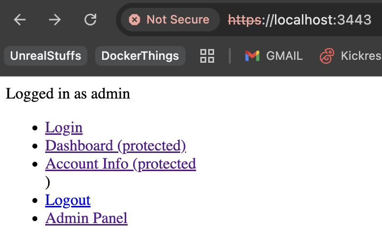
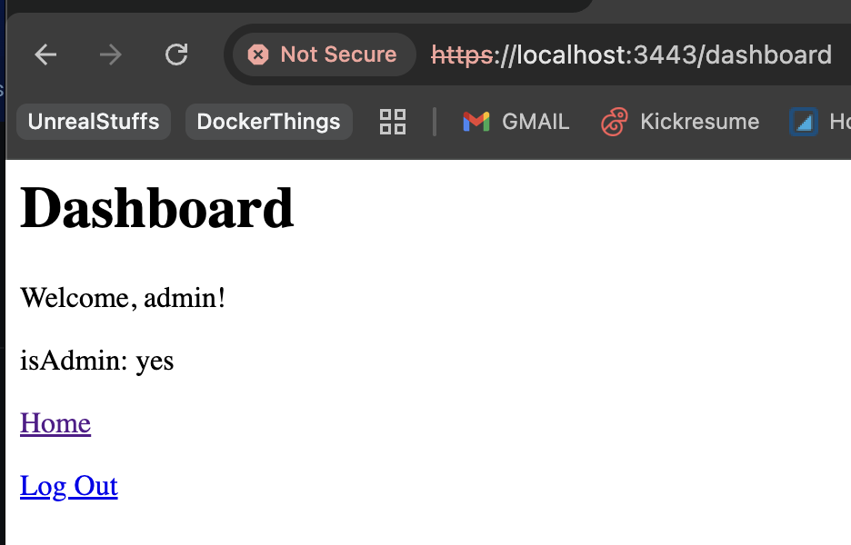
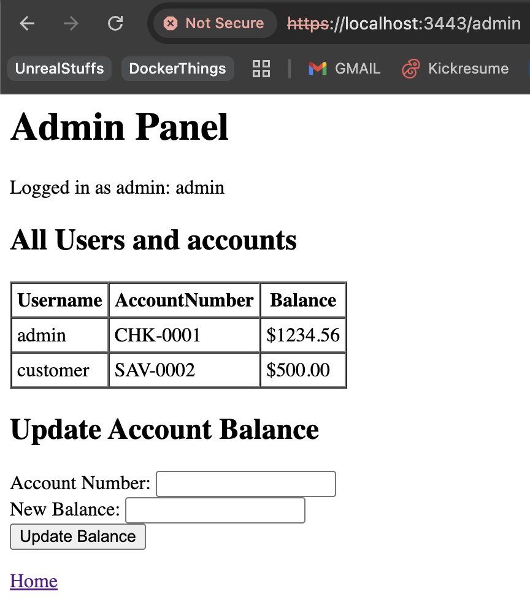
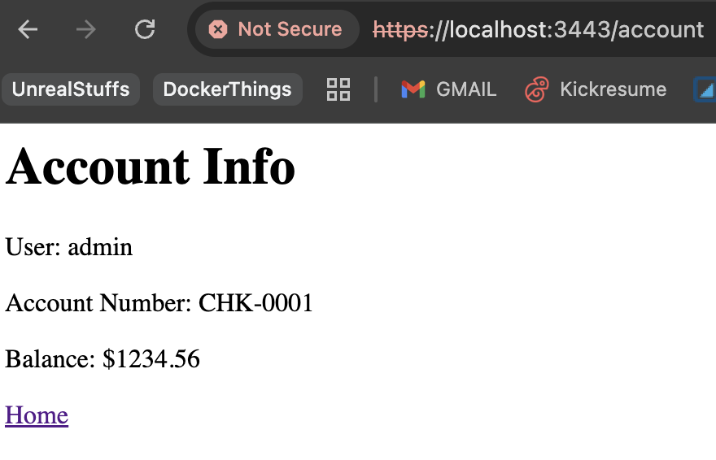
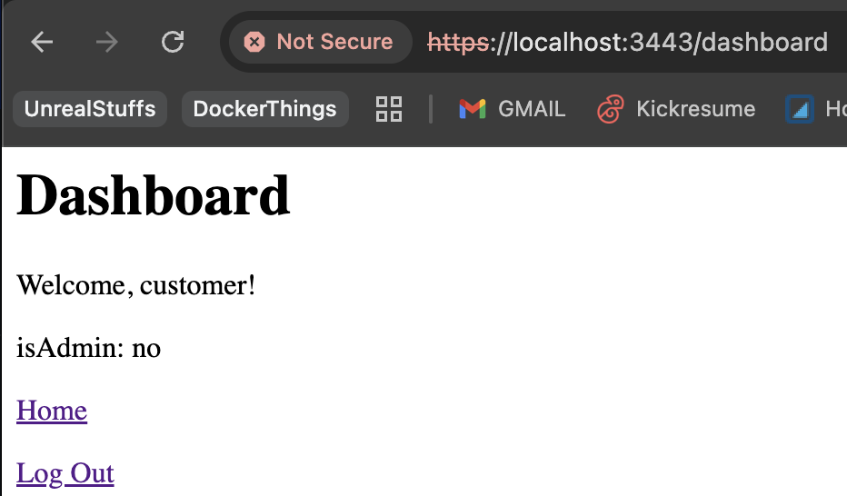
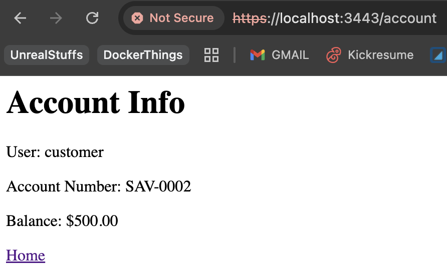
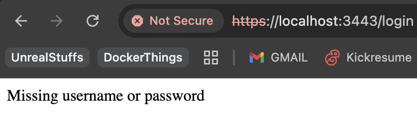

SP_adminentry
View on GitHub →Node.js · TypeScript · PostgreSQL · Docker
A secure admin entry portal built as part of CIS-225 Secure Programming. The project focuses on implementing real-world security practices in a Node.js/Express backend, including encrypted communications, secure authentication, and role-based access control.
Features
The application implements several industry-standard security patterns:
- HTTPS with TLS 1.2+ — All traffic is encrypted using self-signed certificates generated with OpenSSL. SSLv3, TLS 1.0, and TLS 1.1 are explicitly disabled.
- Argon2 Password Hashing — User passwords are never stored in plaintext. Argon2 is used for hashing and verification, chosen over bcrypt for its stronger resistance to GPU attacks.
- Session-Based Authentication — Express-session manages user sessions with httpOnly cookies and sameSite protections.
- Role-Based Access Control — Two roles exist: standard users and admins. Protected routes use middleware to verify login status and admin privileges before granting access.
- PostgreSQL Backend — User accounts and bank account data are stored in a PostgreSQL database, containerized with Docker Compose.
- Security Headers — Responses include headers such as Strict-Transport-Security, X-Frame-Options, X-Content-Type-Options, and X-XSS-Protection.
Tech Stack
- Node.js + Express — Backend server and routing
- TypeScript — Typed throughout for reliability and clarity
- PostgreSQL — Relational database for users and accounts
- Docker + Docker Compose — Containerized database setup
- Argon2 — Password hashing
- express-session — Session management
- OpenSSL / TLS — HTTPS encryption
Sample Code
The following snippet shows the requireAdmin middleware, which protects admin-only routes:
function requireAdmin(req, res, next) {
if (!req.session.userId || !req.session.username) {
return res.redirect("/login");
}
if (!req.session.isAdmin) {
return res.status(403).send("Access denied.");
}
next();
}And the Argon2 password verification on login:
const ok = await argon2.verify(user.password_hash, password);
if (!ok) {
return res.status(401).send("Invalid login");
}
req.session.userId = user.id;
req.session.username = user.username;
req.session.isAdmin = user.is_admin;Screenshots
Admin View




Customer View


Error Handling
